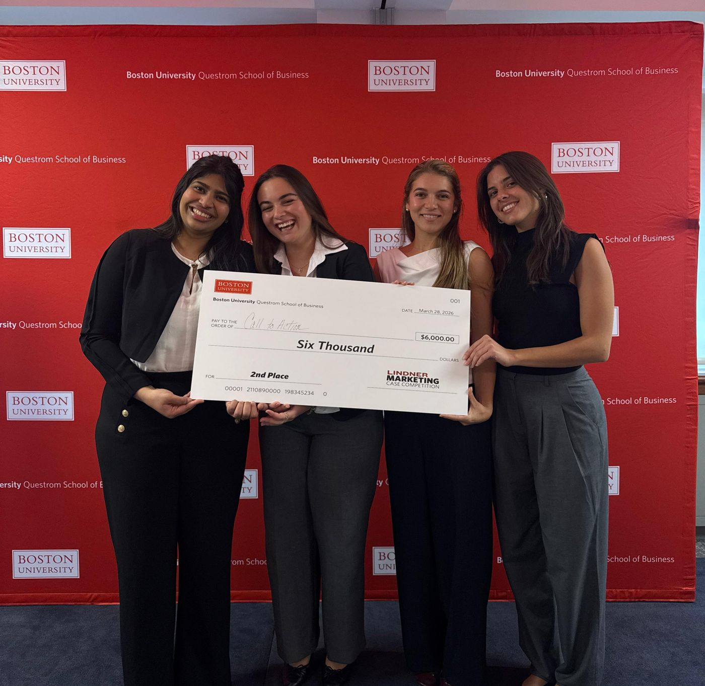
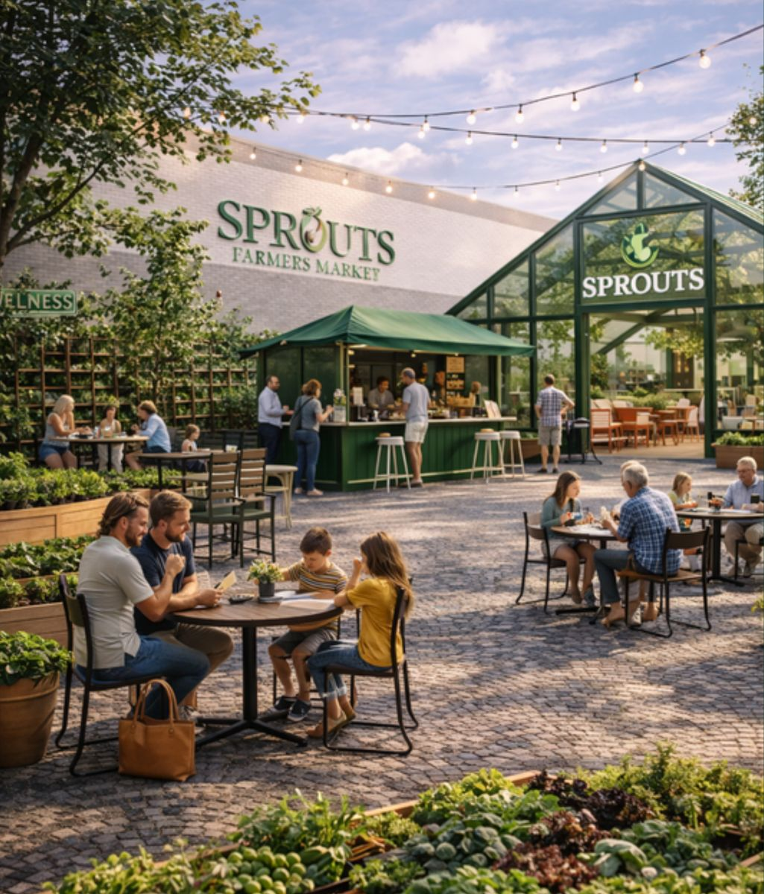

Sprouts: Rooted Here
A New England market entry strategy for Sprouts Farmers Market, built on community, habit, and belonging, developed by a team of four Master in Management students for the Boston University Lindner Marketing Case Competition in March 2026.

Judged by executives from Sprouts, TD Garden, and JPMorgan.
For a grocer that nobody in New England had heard of, we argued that loyalty would be decided long before the first purchase, through the schools, neighbors, and weekly routines that already shape how people live. Our recommendation was for Sprouts to show up in those routines months before opening day, to design the store so that people could feel the difference the moment they walked in, and to keep earning its place in the community long after launch.
The challenge
Sprouts was preparing to open its first New England stores in a region where few shoppers knew the brand and where loyalty to established grocers runs deep. The question was how to enter the market, who to focus on, and how to build awareness and trust before a single store opened.
What we found
We started in Weymouth, Massachusetts, where Sprouts had announced its first location. We visited local stores, spoke with shoppers in the aisles, and ran a short on-site survey, then layered what we heard with research on how New Englanders shop and how Whole Foods first earned its place in the region in the 1990s by acquiring local grocers that communities already trusted.
Community-driven
Decisions travel through schools, neighbors, and local networks far more than through advertising.
Habitual
Most of what people spend on food follows routine and identity, so changing where someone shops means fitting into their life rather than interrupting it.
Health-conscious
Shoppers weigh ingredients, sourcing, and quality before they weigh price.
"I get most things at Trader Joe's, but I go to Fresh Market for meat." Shopper interview, Weymouth
"I used to come more when my kids were younger; now I just grab what I need." Shopper interview, Weymouth
Experience, value, and local connection each existed somewhere in the market, but no grocer offered all three in one place, so shoppers were splitting their week across three or four stores to piece them together.
Where we positioned Sprouts against the grocers our interviewees already used.
Who we designed for
We built the plan around one shopper at two stages of life. Grocery habits formed during the school years tend to last for a decade, and an empty nester carries her recommendations to her book club, her neighbors, and her grown children, so designing for both stages turns a single customer into a long relationship.
Linda today
Suburban mother, 34 to 48, children in school
- How she shops
- Across three or four stores, squeezed between school pickup and practice.
- What would make her switch
- Farm names on shelf tags, her children's school on the community board, and a brand she first noticed on her kid's jersey.
Linda in ten years
Empty nester, 48 to 62, cooking for one or two
- How she shops
- Smaller portions, better quality, and more time to explore.
- What would make her switch
- A store that feels like a neighborhood gathering place, with staff who recognize her and a patio she can linger on.
The strategy
We positioned Sprouts as the farmers market alternative to big grocery, under one promise, Rooted Here, delivered in three phases and weighted by share of the launch budget.
Attract, 25%
Earn trust before the doors open through youth and school sports sponsorships, local food creators, billboards featuring the New England farmers behind the produce, and pre-opening patio events with local vendors and tastings.
"If you're on my kid's uniform, you're basically family."
Build, 45%
Make the store itself the campaign by designing every sense as a touchpoint, from bread and coffee at the entrance to farmer names on every shelf tag, bulk bins, rotating sampling, a local playlist, and a greenhouse café and patio that give people a reason to stay.
"These apples are from Miller Farm in Dighton" made me weirdly proud.
Sustain, 30%
Stay embedded through a Rooted Here loyalty program that rewards events and referrals as well as spending, a rotating space for local small businesses, and a school garden program that puts neighborhood school names on the store walls.
"The bulk guy knows I'm the two scoops of quinoa lady."

The italic lines above are moments we wrote from Linda's point of view to test each phase against her week: the first time she notices Sprouts, her first trip through the store, and the point where it becomes the place she does her real shop.
The plan in numbers
Five stores over three years, with seventy percent of the marketing budget concentrated in community-driven channels. We projected the average basket growing from about $42 in year one to about $60 by year three as sampling, loyalty, and consolidated shopping took hold, with the portfolio reaching operational break-even in year three.
- Weymouth, MAYear 1
- Westport, CTYear 1.5
- Needham, MAYear 2
- Providence, RIYear 2.5
- Brookline, MAYear 3
How I contributed
I set up our first brainstorm using a format I had tested in my People, Teams, and Organizations course: ten minutes of individual thinking, followed by an open, no-judgment round where we built on each other's ideas. That session produced the direction the plan grew from. From there I shaped the audience and community strategy, including the Linda persona across two life stages, the focus on K-12 school partnerships and local food creators, and the lesson from Whole Foods' early growth in New England.
I opened and closed our final presentation. I began with a moment from a trip to the Dominican Republic a week earlier, when I wandered into a street festival I had not planned to attend, tried food I had not come for, and stayed far longer than I meant to. The festival pulled me in, I could feel its energy the moment I arrived, and it clearly belonged to its neighborhood. Those three qualities became the frame for our entire recommendation, and I returned to them at the end to close the case for why Sprouts would win.
This project showed me how much of a person's loyalty to a place is formed before they ever spend money there, through the people and routines around them, and how a brand can earn its way into that routine by showing up early, patiently, and with real specificity about who it is serving.